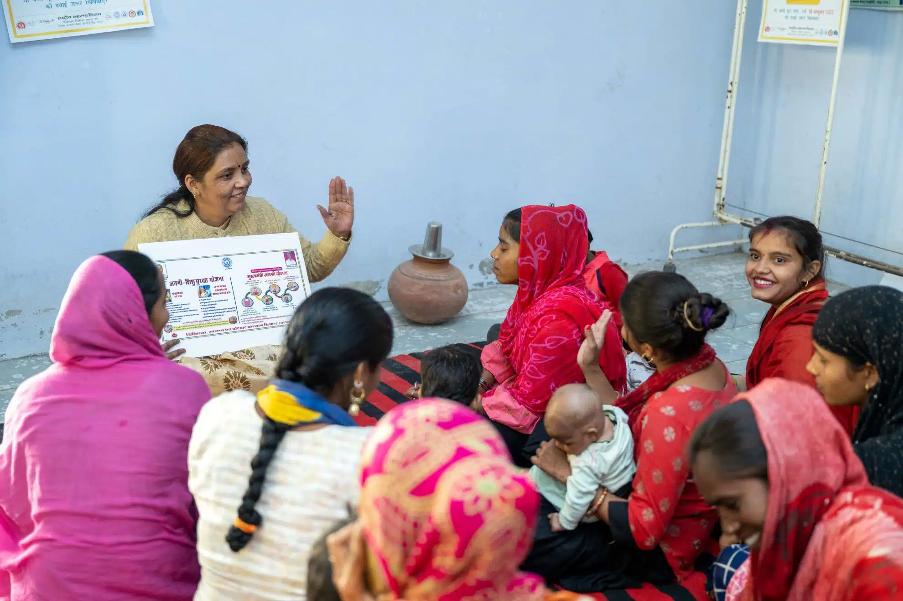
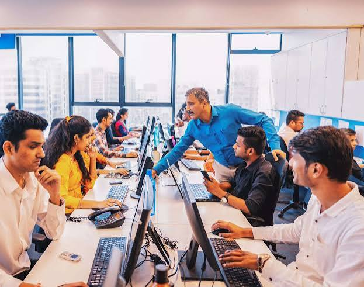

Areas of Impact
Creating meaningful change through our key focus areas.
📚Education
Helping children and youth gain access to quality education,
learning resources, and opportunities for a brighter future.
🐾Animal Welfare
Protecting and caring for animals through rescue efforts,
feeding drives, medical support, and awareness campaigns that
promote kindness and responsible care.
🌱Environment
Encouraging environmental conservation through tree plantation,
cleanliness drives, and sustainability initiatives.
👩Women Empowerment
Supporting women with education, skill development,
and opportunities that promote confidence and independence.
🤝Community Development
Strengthening communities through volunteer programs,
awareness campaigns, and meaningful social initiatives.
💼Skill Development
Providing practical training and career-oriented skills that help
individuals become self-reliant and financially independent.
Our Projects
Explore the initiatives through which InAmigos Foundation is creating
meaningful and lasting change in communities.

Environment
Project Prakriti
Project Prakriti
Promoting environmental conservation through tree
plantation drives and sustainability initiatives.
🌿 Impact:
Created greener communities and increased
environmental awareness.

Education
Project Bachpanshala
Project Bachpanshala
Providing learning resources and educational support
to underprivileged children.
📚 Impact:
Improved access to education, learning materials,
and continuous academic support.

Community Development
Project Seva
Project Seva
Organizing food distribution and essential supply
drives for families in need.
❤️ Impact:
Supported vulnerable families with food,
clothing, and daily essentials.

Women Empowerment
Project Udaan
Project Udaan
Helping women develop skills and confidence
for financial independence.
👩 Impact:
Empowered women through skill development
and livelihood opportunities.

Animal Welfare
Project Jeev
Project Jeev
Rescuing, feeding and caring for stray animals
while spreading awareness about animal welfare.
🐾 Impact:
Improved the wellbeing of rescued animals
and promoted responsible care.

Skill Development
Project Vikas
Project Vikas
Providing career-oriented training and practical
skills to youth and community members.
💼 Impact:
Enhanced employability and promoted
sustainable livelihoods.
Gallery
A glimpse into the moments where compassion, service, and community come together.